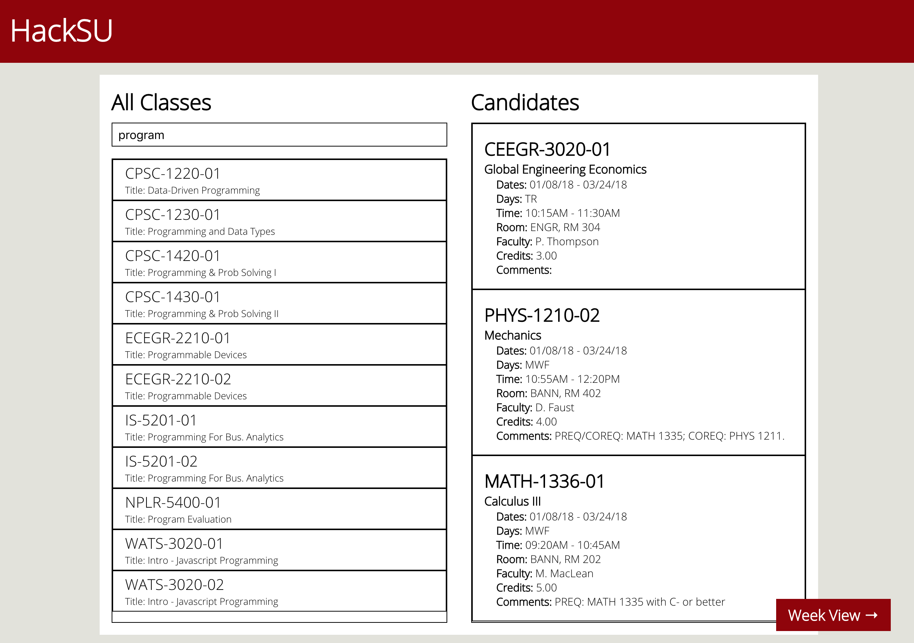

Hello there!
Your browsing history is now property of Cambridge Analytica.
Thank you for your cooperation.
Your browsing history is now property of Cambridge Analytica.
Thank you for your cooperation.
before (current class search interface on school website)
after (a faster and easier way to search for classes)
Searching for classes on my school's website is a pain, I could only search 3 classes at a time, and click through numerous drop down menus. I thought, why couldn't I just search for classes like a Google search entry? So I created a website that improved on the current website by allowing for fuzzy search, and a more organized (and readable) candidate class list. How did I get the course information without access to the school's database? I hacked it, hence the HackSU hackathon. Just kidding, I had to painstakingly scrape through all the classes for Winter Quarter 2018 by learning how to use PhantomJS and CasperJS. That was also how I implemented a login function with our school's actual authentication system - by simulating a login on the school website on the backend. The frontend was built using React and Redux for state management.
Link to site

This was one of the bigger projects during my time at DevLeague. We just learned about Node.js, Express, PostgreSQL, and now it all comes together in this web app that uses all of it. We used Handlebars for front-end templating, and implemented RESTful APIs on the backend. The design of the site was stolen from an imitation of Wordpress' Architekt Theme.
Link to site
The theme for Global Game Jam 2017 was "waves", so our team created a game called Adware WAAVEs (Why Are Ads Virtually Everywhere). The idea was that waves of ads will bombard the player, and the player will have to curl it away using a terminal. I really wanted to create a terminal emulator, so I pushed the idea of using a terminal as the interface, which was a terrible idea because to be honest the terminal made the game look super boring. Oh well...
¯\_(ツ)_/¯
Link to site
This web app was created for the Stupid Shit No One in Hawaii Needs and Terrible Ideas Hackathon - the first hackathon I have ever attended. It mixes SFW images with NSFW titles and content from various subreddits to give the user a NSFW but SFW experience. No one needs this shit, it was for the lulz.
Link to site (use mobile Chrome/Safari for best experience)
Fastenate is a web app for viewing content only from image centric subreddits. I learned about RESTful APIs through this project by utilizing Reddit's API to fetch content. Try finding the easter egg hidden in this site :)
Link to site
Populating a webpage with thousands of div's may not be the most efficient way to make a MS Paint rip-off, but it did teach me a lot about the Document Object Model (DOM). I also learned about local storage on the browser by implementing a save functionality.
Link to site
Senior year of high school, I was taking all my classes at the local community college through Jump Start. So I decided to also go to a coding bootcamp called DevLeague to keep myself busy. This website was the challenge that all applicants to the bootcamp had to pass to get in. DevLeague would provide a javascript file that outputs random email messages, while applicants have to make a website that displays the data and figure out how to upload the code to GitHub.
Link to site
One of the first prototypes. On the left is Brian, and on the right is Gum.
The final product
Junior year of high school was eventful. I started our school's robotics club and participated in the FIRST Tech Challenge. Meanwhile, I also had to take courses at the local community college through Running Start, practice for our school's It's Academic Hawaii team, practice for our school's first Cyberpatriot team, AND do Judo (oh the horrors).
Link to code for robot controller
This demo of a (fictional) essay correction program was created for English class to teach how to do citations, MLA style. It was created mostly using Adobe Flash with a touch of Adobe After Effects.
This video was created for geometry class to illustrate how some corals resemble geometric shapes. It was made using Adobe After Effects and Cinema 4D.
This website was created for the plants and animals of Hawaii project for biology class. Codecademy started around this time (2013), which was where I learned how to use jQuery to do the animations
Link to site
This video was created for a research project on malaria for global studies class. Shout out to Kurzgesagt who started their YouTube channel around this time (2013), which is why a lot of the animation was inspired by their style.
This was one of my oldest projects, it was a game I made for programming class. The assignment only required the use of mouse events, but since I had already been playing with Flash for a while, I decided to make something a little more complicated... This game was created using Macromedia Flash 8 and ActionScript 2. The game has Chinese written all over it because I was attending school in Macau at the time (2012). If you are brave enough, open this link to download the ancient .swf file.
Email: egao@sent.com
IRC: @sympt on Freenode
Ham: PSRG (WW7PSR) on 146.96MHz
Or alternatively, whisper to your iPhone ;)
(I was kidding about the last two)